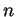

Next: File formats
Up: Parameters
Previous: Algorithmic parameters
Contents
Input and output parameters
The remaining parameters control the input to and output from FISH.
- QUIET_MODE
- If selected, FISH will suppress the default screen
output (see 4.2.1). This switch takes no arguments.
- TIMING
- If selected, FISH will report the number of seconds
elapsed between various execution time points. This switch takes no
arguments.
- CONTROL_FILE
- Specifies the name of the file containing the instructions
for FISH to read particular contig and match files 4.1.1.
If not specified at the command-line, FISH will search for a file named
``control.txt" and use that, if available.
- PRINT_CONTIGS
- Specifies the name of the file to which FISH
writes contig output (see 4.2.2). Unless selected, no file will be written.
- PRINT_GRIDS
- Specifies the name of the file to which FISH writes
grid output (see 4.2.3). Unless selected, no file will be written.
- PRINT_BLOCKS
- Specifies the name of the file to which FISH
writes block output in human-friendly format (see 4.2.4).
Unless selected, no file will be written.
- PRINT_B_SIMPLE
- Specifies the name of the file to which FISH
writes an alternative format for the block output that is more computer friendly
(see 4.2.4). Unless selected, no file will be written.
- BLOCK_PROB
- This specifies a value for the confidence level of a
block. The confidence level is calculated as the expected number of blocks with
 points divided by the observed number of blocks with points. If the observed
number does not sufficiently exceed the expected number (under the null model), then
blocks of that size are flagged in the summary output. Some of these blocks may well be
spurious.
Next: File formats
Up: Parameters
Previous: Algorithmic parameters
Contents
root
2003-06-27